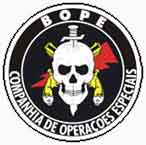

A Polícia Militar do Distrito Federal – Brasília, vai abrir novo concurso para ingresso na patente de Soldado da PMDF. Segundo informes, o edital será lançado em novembro de 2008 e as provas serão realizadas no fim de fevereiro de 2009.
Será exigido dos candidatos o nível de ensino superior, 3º grau, e as provas serão elaboradas e aplicadas pela Cespe/UnB. No dia 08 deste mês deve ser oficialmente autorizado o concurso, e aí saberemos as datas corretas.
O salário inicial do Soldado PM de Brasília será R$ 4.030,00 bruto, e estima-se que o DF vai abrir 1.500 vagas para soldado, com convocação imediatamente após o término de todas as fases do concurso para o curso de formação.
Outra medida a ser adotada pelo governo de Brasília com relação à Polícia Militar será a contratação de estagiários para execução dos trabalhos burocráticos, na atividade meio da corporação, como arquivo e digitação. Assim, muitos policiais poderão ser alocados na atividade fim, que é o patrulhamento das ruas do DF. O salário para estagiário da Policia Militar do Distrito Federal será em torno de R$ 830,00. Grande iniciativa dos militares do distrito federal, muito bom! Gostaria de ver isso feito por aqui também.Um aparte: engraçado constatar como o salário bruto do futuro posto de estagiário da PMDF ficará bem próximo do líquido recebido pelos soldados da PM do Rio, e o salário bruto dos soldados da PMDF supera em muito o de delegado de polícia de São Paulo e Minas. Igual situação ocorre na maioria dos estados.
Aos interessados o conselho é começar a estudar desde logo, refazendo provas dos concursos anteriores, mas estudando muito mais, pois se houve mudança no nível de escolaridade, haverá também alteração do nível de conhecimento cobrado.
ATUALIZAÇÃO: As inscrições começam dia 19 de janeiro de 2009. Saiba mais no post Concurso para a Polícia Militar de Brasília ano 2009.